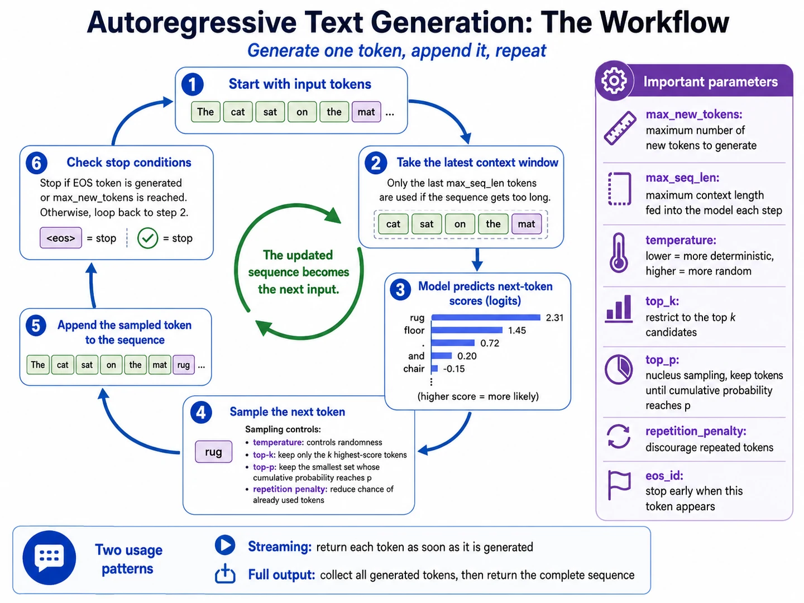
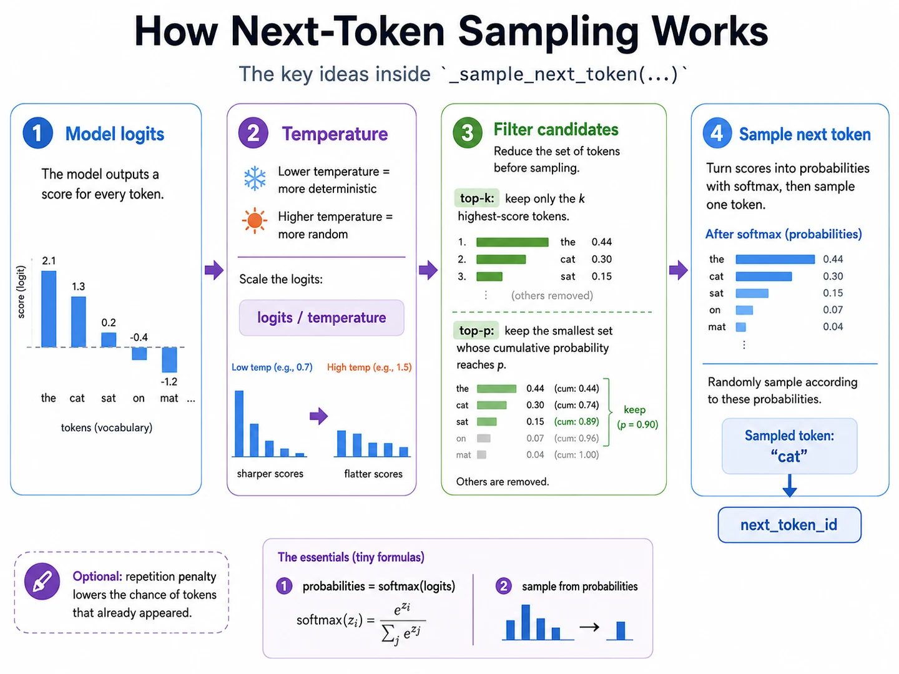

Lesson 13 of 23 · LLM preliminaries
Predict one token, append it, repeat.
Your win: trace the autoregressive generation loop and explain how temperature, top-k, and top-p alter the next-token choice.
Module bridge: training predicts every aligned next token in parallel; generation repeatedly uses the final visible position to choose one new token.

Only the final logits choose the new token
For model output \(L\in\mathbb R^{B\times T\times V}\), one sequence uses
\[\mathbf z=L[0,T-1,:]\in\mathbb R^V.\]
The earlier logits describe earlier next-token decisions. The final row scores the token that should follow the complete visible context.
Temperature reshapes, but does not reorder, logits
\[p_i=\frac{e^{z_i/\tau}}{\sum_j e^{z_j/\tau}}.\]
Lower \(\tau\) sharpens differences and makes the highest-logit tokens dominate. Higher \(\tau\) flattens the distribution and increases randomness.
Change temperature for fixed logits \((2.1,1.3,0.2,-0.4,-1.2)\)
Lower = sharper; higher = flatter

Greedy is not sampling: choosing \(\arg\max_i z_i\) is deterministic. Sampling draws according to a probability distribution and can produce different continuations from the same prompt.
Code checkpoint · one temperature and top-k decision
Show a compact sampling function
def sample_next_token(logits, temperature=1.0, top_k=None):
scores = logits / temperature
if top_k is not None:
cutoff = torch.topk(scores, top_k).values[..., -1, None]
scores = scores.masked_fill(scores < cutoff, float("-inf"))
probabilities = torch.softmax(scores, dim=-1)
return torch.multinomial(probabilities, num_samples=1)
# logits is the final-position vector: model(input_ids)[:, -1, :]Trace it: Why must filtering happen before torch.multinomial?
Retrieval check
What normally happens as temperature moves from \(1.0\) to \(0.5\)?
Practice before moving on
- For logits with shape \(2\times6\times1000\), what slice supplies one next-token decision for each batch item?
- Scale logits \((2,1)\) using temperatures \(0.5\) and \(2.0\).
- With probabilities \((0.50,0.25,0.15,0.10)\), which tokens remain under top-k with \(k=2\)?
- For the same probabilities, what is the smallest top-p set for \(p=0.80\)?
- Name two stopping conditions for generation.
- Explain why appending a sampled token changes the next forward pass.
Check solutions
logits[:, -1, :], with shape \(2\times1000\).- At \(0.5\): \((4,2)\); at \(2.0\): \((1,0.5)\).
- The first two tokens.
- The first three tokens, because \(0.50+0.25+0.15=0.90\ge0.80\), while the first two total only \(0.75\).
- An EOS token or a maximum number of new tokens.
- The new ID joins the context, so later hidden states and logits are conditioned on it.
Source: Holtzman et al., The Curious Case of Neural Text Degeneration.